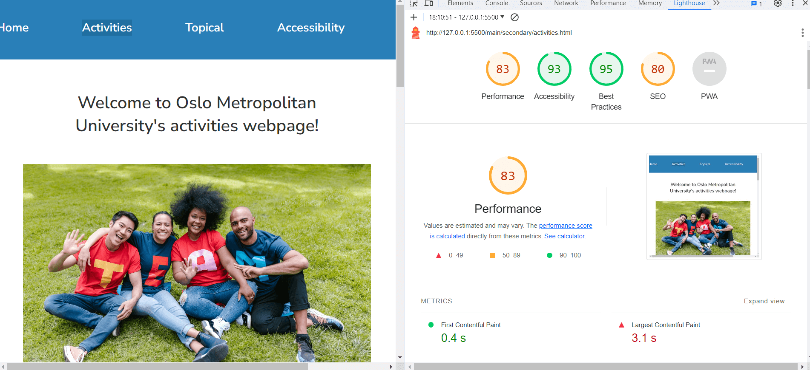

This is the result of the accessibility test for the Home page.
This is the result of the accessibility test for the Activities page.
This is the result of the accessibility test for the Topical page.
This is the result of the accessibility test for the Accessibility page.
When our group was in the process of creating the layout for the website for our project we considered a number of issues which would help us organize our work consistently and effectively. First of all, we made sure to use semantic HTML elements to convey the document structure. Semantic elements provide valuable information to assistive technologies, such as screen readers, helping users with disabilities to understand and navigate the content more effectively. Search engines use semantic HTML to understand the content and context of a webpage. By using elements like "article", "section", and "header", as well as appropirate meta tags in the "head" we tried to provide search engines with clearer information about the organization of our content, potentially improving our page's search engine ranking. We also tried adding on a consistent basis descriptive alternative text (alt attributes) for images. We are sure that checking the correct use of heading tags (h1, h2, etc.), as well as their correct order, helped us to create a logical document structure and is also a good practice we are glad we incorporated in our work. Another issue that was of great concern for our group was the responsive design of our website. People access the internet using a diverse range of devices, including smartphones, tablets, laptops, and desktop computers. Responsive design ensures that our website is accessible and usable on more devices, thus accommodating users with different preferences and needs. We created designs for a desktop and a mobile phone version of the website.
To test the accessibility of our site, we utilized an automated test through Lighthouse. By simply inputting our repository through the Lighthouse plug-in, we were able to access the full capabilities of the automated test. Our group was very happy with the results of the automated test, and we received critical feedback on areas we performed well on and areas that we could potentially improve. All pages of our website received competitive scores of 100, 90, 83, and 83. While the automated test was very helpful in getting feedback, we knew it wasn't fully representative of how accessible our site actually was. For this reason, our group knew that we must take the results with a grain of salt, and reflecting on the website's accessibility as a group and through outsite input would be more comprehensive.